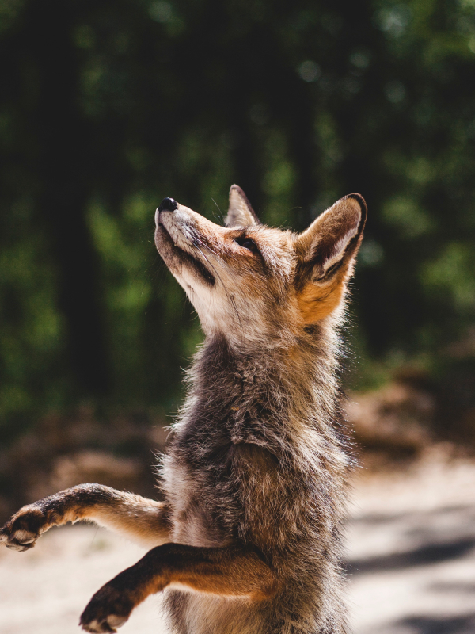
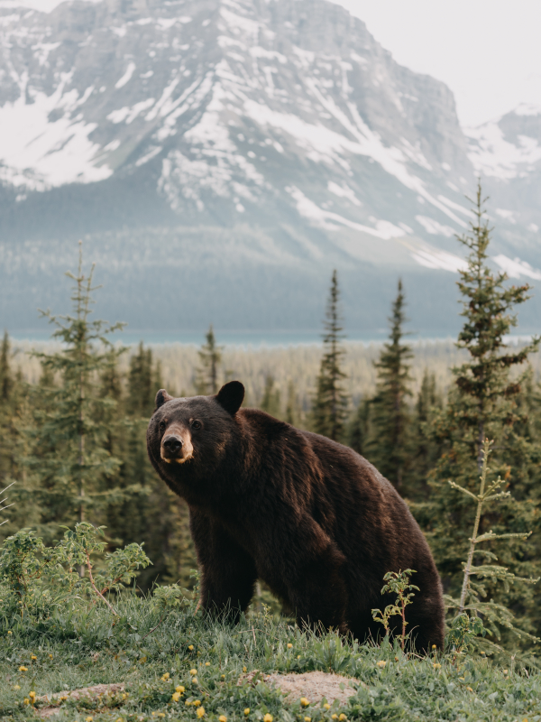

Animais Fantásticos
- 
-

- 
-

-

Raposa
As raposas são animais mamíferos e onívoros pertencentes à família Canidae. São vulpídeos de porte médio, caracterizados por um focinho comprido e uma cauda longa e peluda. As raposas têm o crânio achatado, orelhas triangulares verticais, focinho pontiagudo e ligeiramente arrebitado e uma cauda longa e espessa.
Também apresentam como particularidade suas pupilas ovais, semelhantes às pupilas verticais dos felídeos.
As raposas vivem em todos os continentes, exceto a Antártida. De longe, a espécie mais comum e difundida de raposa é a raposa vermelha (Vulpes vulpes) com cerca de 47 subespécies reconhecidas. A distribuição global das raposas, juntamente com sua ampla reputação de astúcia, contribuíram para sua proeminência na cultura popular e no folclore em muitas sociedades ao redor do mundo.
A caça à raposa com matilhas de cães, há muito uma atividade estabelecida na Europa, especialmente nas Ilhas Britânicas, foi exportada por colonos europeus para várias partes do Novo Mundo.
Esquilo
Os esquilos pertencem a uma grande família de mamíferos roedores, de pequeno e médio porte, conhecida como Sciuridae. No Brasil, são também conhecidos como serelepe, caxinguelê, caxinxe[1], quatimirim, quatipuru, agutipuru ou acutipuru.
Na Galiza e em algumas zonas de Portugal, também são conhecido por esquio. Os esquilos estão espalhados por quase todo o mundo, a maioria nas zonas de climas temperado ou tropical, mas também em algumas zonas de clima frio.
Como todos os roedores, possuem presas fortíssimas, com que roem facilmente sementes, principalmente bolotas.
Também apresentam como particularidade suas pupilas ovais, semelhantes às pupilas verticais dos felídeos.
Depois de 28 dias de gestação, nascem 4 ou 5 filhotes (no máximo 7) duas vezes por ano.
O seu tamanho varia muito, desde os pequenos esquilos Myosciurus pumilio, que têm de 7 a 10 cm de comprimento, às grandes marmotas da espécie Marmota marmota, que têm de 53 a 73 cm de comprimento (com a cauda).
Urso
O urso-negro (Ursus americanus), também conhecido como baribal, é um urso norte-americano, encontrado do Alasca ao Norte do México. Alcança 2,20 m de comprimento, 1,10 m de altura na cernelha e 360 kg de peso.
O urso negro geralmente vive cerca de 15 anos, mas alguns podem alcançar até 40 anos.
É um bom nadador e pode correr a até 50 km/h. Sua pelagem pode ser de cor negra, marrom, bege ou branca. Algumas subespécies estão ameaçadas de extinção.
A aparência do urso-negro é a de um animal grande e feroz, no entanto, 70% de sua dieta consiste de material vegetal - frutos, nozes, gramíneas, raízes e seiva de árvores. Também se alimenta de carne, geralmente de pequenos mamíferos e peixes, raramente se alimenta de grandes animais. Gosta de vasculhar os depósitos de resíduos do homem.
Lobo
O lobo (também chamado de lobo-cinzento; nome científico: Canis lupus) é uma espécie de mamífero canídeo do gênero Canis. É um sobrevivente da Era do Gelo, originário do Pleistoceno Superior, cerca de 300 mil anos atrás.
Também apresentam como particularidade suas pupilas ovais, semelhantes às pupilas verticais dos felídeos.
É o maior membro remanescente selvagem da família canidae. O sequenciamento de DNA e estudos genéticos reafirmam que o lobo-cinzento é ancestral do cão doméstico (Canis lupus familiaris), contudo alguns aspectos desta afirmação têm sido questionados recentemente.
Uma série de outras subespécies do lobo-cinzento foram identificadas, embora o número real de subespécies ainda esteja em discussão. Os lobos-cinzentos são tipicamente predadores ápice nos ecossistemas que ocupam.
Embora não sejam tão adaptáveis à presença humana como geralmente ocorre com as demais espécies de canídeos, os lobos se desenvolveram em diversos ambientes, como florestas temperadas, desertos, montanhas, tundras, taigas, campos e até mesmo em algumas áreas urbanas.
Macaco
Macaco é um termo de origem africana (provavelmente do banto makako) utilizado como designação comum a todas as espécies de símios ou primatas antropoides
É aplicada restritivamente no Brasil aos cebídeos (ou macacos do Novo Mundo) em geral.
No sentido estrito, "macaco" refere-se às espécies de primatas pertencentes ao género Macaca.
A designação mico se origina, segundo o Dicionário Aurélio, do caraíba (karib) continental. É bastante usada no Brasil, onde costuma aplicar-se às espécies do gênero Cebus, no Sul, e às espécies de pequeno porte, ou saguis, no Norte.
Leão
O leão [feminino: leoa] (nome científico: Panthera leo) é uma espécie de mamífero carnívoro do gênero Panthera e da família Felidae. A espécie é atualmente encontrada na África subsaariana e na Ásia, com uma única população remanescente em perigo, no Parque Nacional da Floresta de Gir, Gujarat, Índia.
Foi extinto na África do Norte e no Sudoeste Asiático em tempos históricos, e até o Pleistoceno Superior, há cerca de 10 000 anos, era o mais difundido grande mamífero terrestre depois dos humanos, sendo encontrado na maior parte da África, em muito da Eurásia, da Europa Ocidental à Índia, e na América, do Yukon ao México.
É uma dos quatro grandes felinos, com alguns machos excedendo 250 quilogramas em peso, sendo o segundo maior felino recente depois do tigre.
A pelagem é unicolor de coloração castanha, e os machos apresentam uma juba característica. Uma das características mais marcantes da espécie é a presença de um tufo de pelos pretos na cauda, que também possui uma espora.
FAQ
- Qual a idade dos animais?
- As raposas são animais mamíferos e onívoros pertencentes à família Canidae. São vulpídeos de porte médio, caracterizados por um focinho comprido e uma cauda longa e peluda.
- Eles são fantásticos?
- Também apresentam como particularidade suas pupilas ovais, semelhantes às pupilas verticais dos felídeos.
- Qual a diferença?
- As raposas são animais mamíferos e onívoros pertencentes à família Canidae. São vulpídeos de porte médio, caracterizados por um focinho comprido e uma cauda longa e peluda.
- Como proteger?
- Também apresentam como particularidade suas pupilas ovais, semelhantes às pupilas verticais dos felídeos.
Números
Contato
- contato@origamid.com
- +55 (21) 9999-9999
- Rua do Conde, nº 21
- Rio de Janeiro - RJ
- Doe 0 bitcoin para nos ajudar
- Seg à Sex das 8 às 18